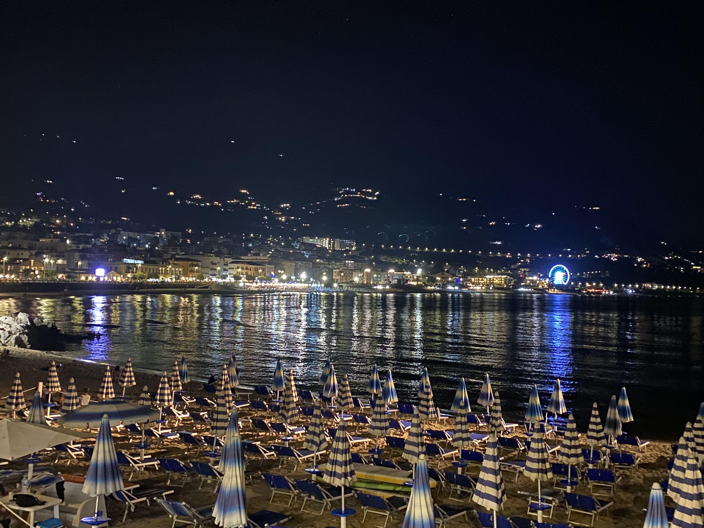
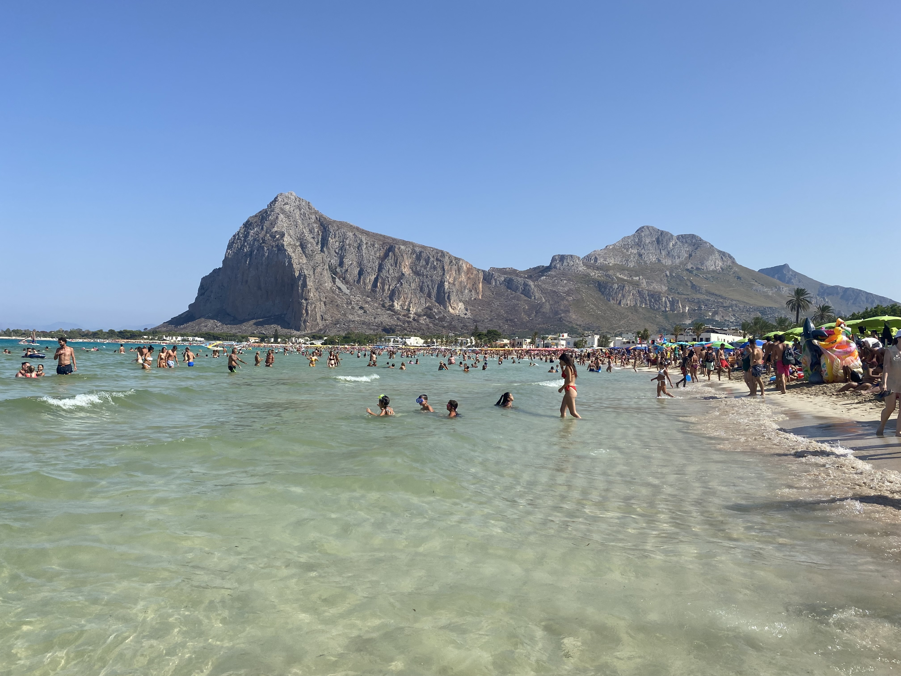

Travel
Cinisi, Sicily

Cinisi is a small town in northweatern Sicily. It also happens to be the hometown of my Grandfather and my Uncle. It consisits of one large street running down the center (corso Umberto), with a few side streets branching off. The surrounding area is very hilly, and the town itself is on a slight incline. At the top of the incline and at the end of the main street, is the piazza and the main church, La Chiesa Madre di Santa Fara.
Top Foods I ate while in Cinisi
- Fresh Cornetto filled with pistachio cream inside for breakfast
- Freshly sliced Salamai, mortadella, and provolone sandwich on fresh bread
- Strawberry sorbet
Cefalu, Sicily
Cefalu is a small town on the coast of northcentral Sicily. The town runs far along the coast, with a long, thin beach acoompanying it. The town has a all brick, thin roads. Roads so thin and packed with people that you'd expect a car to not be able to traverse it. This was not the case however, as cars would try their best to manuver through the city, dodging people and shops along the way. The town also possesees a large piazza with a large church overlooking it. This piazza is stuffed with differemt cafes, restuarants, bakeries and bars.
Top Foods I ate while in Cefalu
- Lobster Ravioli
- Arancini, a fied rice ball, filled with sausage and peas
- Cassatina, a small, green breakfast pastry
San Vito lo Capo, Sicily
San Vito lo Capo is a large tourist attraction in Sicily, and for good reason. This town contains one of the largest, most beautiful beaches in the world. This beaches stretches for almost a mile down. The water is crystal clear and the perfect temperature in the Summer. The town also lights up at night, as the bars, restaurants, and gelato shops start to rake in customers on a warm, pleasant night.
Top Foods I ate while in San Vito
- A charcuterie board of different meats and cheeses accompanied by a bright, refreshing Sprtiz
- A wood oven pizza with french fries on top
- Panele sandwich, a sandwich of fried chickpeas